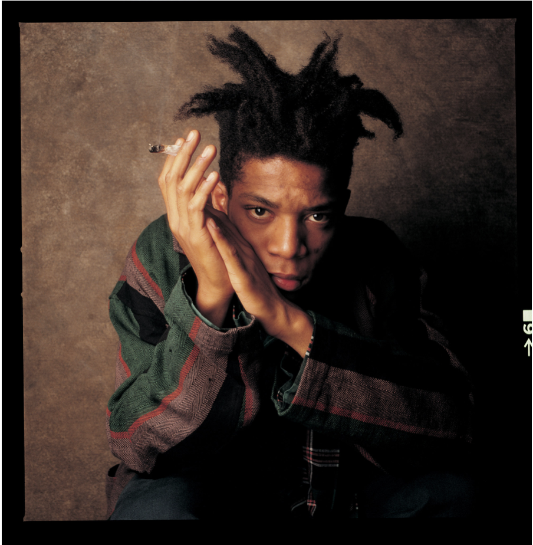
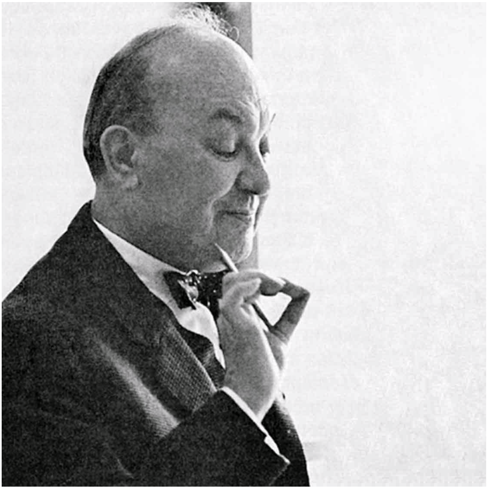
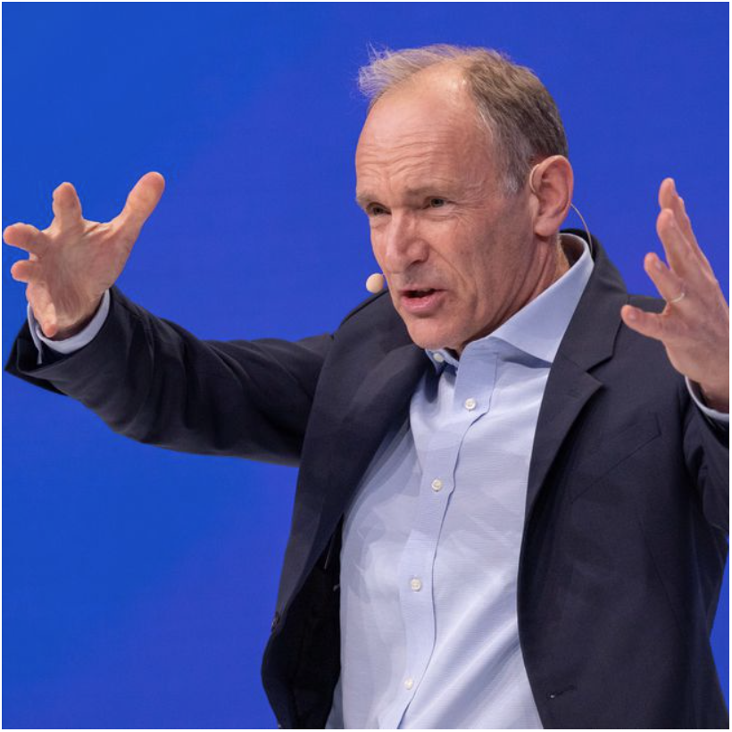

Bookstore
Art
Artists
Frida Khalo
Jean Michel Basquiat
"I don't listen to what art critics say. I don't know anybody who needs a critic to find out what art is."

Salvador Dalí
Design
Designers
David Carson
Neville Brody
“Digital design is like painting, except the paint never dries.”
Typography
Typographers
Jan Tschichold
"Perfect typography is certainly the most elusive of all arts. Sculpture in stone alone comes near it in obstinacy."

Matthew Carter
Susan Kare
Engineering
Engineers
Håkon Wium Lie
Linus Torvalds
Tim Berners-Lee
"Innovation is serendipity, so you don't know what people will make"
